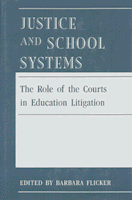

<body bgcolor="#FFFFFF" text="#000000" link="#0000FF" vlink="#CC0000" alink="#CC0000"><center><hr width="350" size="1" align="center" noshade>Examines the effectiveness and deficiencies of judicial intervention into the problems of racial discrimination in education<hr width="350" size="1" align="center" noshade><p><a href="https://cdcshoppingcart.uchicago.edu/Cart/ChicagoBook.aspx?ISBN=9780877226758&&PRESS=temple" target="_top">Buy this book!</a> | <a href="https://cdcshoppingcart.uchicago.edu/Cart/Cart.aspx?PRESS=temple" target="_top">View Cart</a> | <a href="https://cdcshoppingcart.uchicago.edu/Cart/Cart.aspx?PRESS=temple" target="_top">Check Out</a></p><p></p></center><!--none//--><h1>Justice and School Systems</h1>
<H2>The Role of the Courts in Education Litigation</H2>
<h3>edited by Barbara Flicker</h3>
<P>cloth 0-87722-675-X $80.50, Mar 90, <FONT COLOR=#990033>Available</FONT>
<br>Electronic Book 1-43990-164-3 $80.50 <FONT COLOR=#990033>Available</FONT>
<BR> 456 pp
</P><BLOCKQUOTE><I>"Highly qualified scholars examine here in great detail policy-related activities of courts on three very important educational topics...a unique volume."</I>
<br>&#151<b>Louis Fischer</b>, University of Massachusetts at Amherst<I></I></BLOCKQUOTE>
<p>This book examines the effectiveness and deficiencies of judicial intervention in solving the problems of discrimination in the nation’s schools. The authors present case studies, surveys, and interviews of the lawyers and judges who participated in the leading cases. And they analyze critical issues that remain unresolved, such as the battle over racial desegregation that still rages in Yonkers, New York.
<BR>&nbsp;<h2>Reviews</h2>
<p><I>"This project is an important effort to develop a more accurate description and interpretation of the evolving roles of courts in the management of very complex educational litigation."</I>
<br>&#151<b>Gary Orfield</b>, University of Chicago
<BR>&nbsp;<h2>Contents</h2><P>
<p><b>Part I: Introduction</b>
<br>1. Overview of Judicial Activism in Education Litigation &#150 Howard I. Kalodner
<p><b>Part II: Educational Opportunities for Children with Handicaps</b>
<br>2. Jose P. V. Ambach: Special Education Reform in New York City &#150 Michael A. Rebell
<br>3. Allen V. McDonough: Special Education Reform in Boston &#150 Michael A. Rebell
<p><b>Part III: Equal Educational Opportunities for Women</b>
<br>4. Judicial Oversight of Agency Enforcement: The Adams and WEAL Litigation &#150 Rosemary Salomone
<p><b>Part IV: Equal Access and Educational Opportunities for Racial and Linguistic Minority Students</b>
<br>5. Endless Journey: Integration and the Provision of Equal Educational Opportunity in Denver's Public Schools: A Study of Keyes v. School District No. I &#150 James J. Fishman and Lawrence Strauss
<br>6. Voluntary Interdistrict School Desegregation in St. Louis: The Special Master's Tale &#150 D. Bruce La Pierre
<br>7. Desegregation in Chicago: Settlement without a Trial &#150 Allen E. Shoenberger
<p><b>Part V: Assessment of the Court's Appropriate Role in Education Litigation</b>
<br>8. The View from the Bench: Judges in Desegregation Cases &#150 Barbara Flicker
<br>9. The View from the Bar: An Examination of the Litigator's Role in Shaping Educational Remedies &#150 Paul L. Tractenberg
</P><BR>&nbsp;<H2>About the Author(s)</H2>
<P><b>Barbara Flicker</b> is former Executive Director and currently Consulting Director of the Institute of Judicial Administration Inc.</P>
<BR><H2>Subject Categories</H2>
<p><A HREF="/tempress/law.html" TARGET="_top">Law and Criminology</a>
<BR><A HREF="/tempress/political.html" TARGET="_top">Political Science and Public Policy</a>
<BR><A HREF="/tempress/education.html" TARGET="_top">Education</a>
</p>
<p align="center"><a href="https://cdcshoppingcart.uchicago.edu/Cart/ChicagoBook.aspx?ISBN=9780877226758&&PRESS=temple" target="_top">Buy this book!</a> | <a href="https://cdcshoppingcart.uchicago.edu/Cart/Cart.aspx?PRESS=temple" target="_top">View Cart</a> | <a href="https://cdcshoppingcart.uchicago.edu/Cart/Cart.aspx?PRESS=temple" target="_top">Check Out</a></p><p><font face="Arial" size="1"><a href="copyright.html" onMouseOver="window.status='Web Copyright Policy';return true;" onMouseOut="window.status=''" title="Web Copyright Policy">&copy;</a> 2015 <a href="http://www.temple.edu" target="new" onMouseOver="window.status='Link to Temple University home page';return true;" onMouseOut="window.status=''" title="Link to Temple University home page">Temple University</a>. All Rights Reserved. http://www.temple.edu/tempress/titles/693_reg.html</font></p>